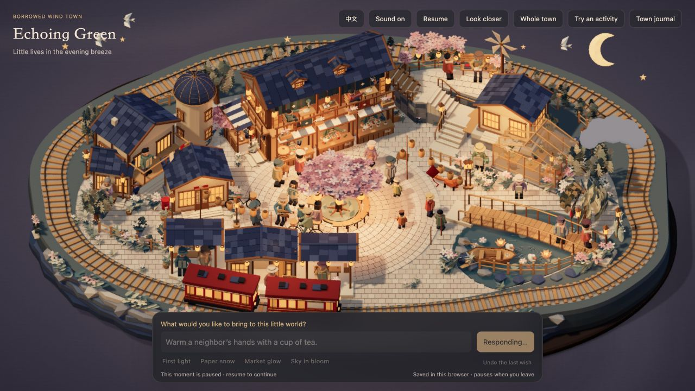
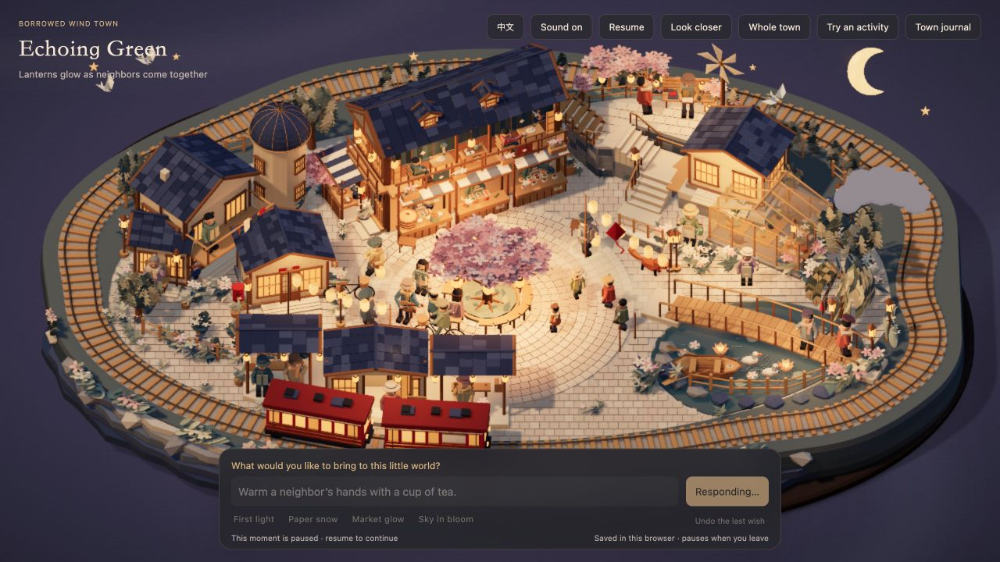

← 回到小镇 · CP46 完整 83 案例档案CP47 · 纸灯、礼物与狐狸
本轮重点：更清楚的灯光变化、更有来由的礼物交接、更活泼的狐狸，以及局部互动中的主角提示。原有暖纸雕美术、建筑和完整屋顶保留。
这是本轮补充验收。旧版 83 案例报告保留作历史记录，不代表本轮又重新逐一观看了 83 段动画。以下图片是实际网页在受控模拟时间的采样画面；单张图片不能证明整段动作流畅。
这次改了什么
- 12 盏灯串与 2 盏现成手提灯保留实体尺寸，拉开未点亮与暖光状态的差别，加入逐盏点亮和局部地面暖光；不靠把整个小镇变暗来造差别。
- 停靠时的旅客先候望、走近电车行李架，取下带蝴蝶结的礼物并举起来看看，再走出站台与街坊交接。同一礼物始终保留同一个身份。此活动仍只在电车停靠、旅客可用时提供。
- 狐狸先走近可达的邻居，停下抬爪摇尾。身体朝向随脚步转弯，站定时不绕中心轴转。尾巴由一个硬三角体改为四段相连的纸折结构；平时加入舔爪、伸展、嗅闻与更清楚的摇尾。
- 局部活动最多提示三名主角：淡金色纸笔触脚下圈持续跟随活动，并有少量柔和暖光。礼物换手后，提示随接收者交接。全镇花火、夜市等活动不把所有人圈起来；没有人物头顶文字。
- 用户触发的手工动作约快 18%，对应局部行走约快 12%；上下楼与桥梁的既有步态不统一粗暴加速。一件事结束后再接受下一件。
纸灯未点亮

灯、绳与灯架已经在场景中；保持原有环境亮度。
纸灯沿街亮起

依次增加暖橘色自发光与柔和地面暖光；两名居民实际取灯、携灯并归还。
狐狸招呼街坊
先沿弧线小跑，再停下抬前爪、摇四段纸折尾巴；邻居短暂停步回应。
电车捎来礼物
旅客走近行李架，双手取下礼物并举起来看。
礼物交给街坊
同一个礼物转交给接收者；主角提示随物件归属交接。
本轮实际测试
254 项完整运行检查通过，35 项云端接口检查通过；主角提示与灯光也经过实际网页复看。17 条轮换提示分别在两个不同运行状态中完整执行，共 34 次：均有进展、流程完成、参与者锁释放。另以三个开场状态检查狐狸接近、抬爪与摇尾，均完成。
下面九条均为本轮真实模型调用，其中最后三条专门测试已入夜时的重复点灯与明确保持原样，收到的计划再经同一最终模拟器执行。表内秒数是模拟中整段互动及收尾的时长，包含走路和交接，不是 API 延迟，也不是要求用户先等待这么久才见到反馈。纸灯中两位搬灯者会先完成工作，再温和收束余下停留。
本轮沿用现有 Jev 接口、模型、密钥与云服务权限。上线检查发现“已经是夜晚”时，明确点灯曾被误解成团聚；第 19 版接口已修复此问题，否定、假设与混合要求仍交给模型判断，不用关键词强行覆盖。狐狸尾巴、礼物饰带、行李架与提示均为少量运行时几何；原 GLB 与贴图未换。地面提示共用实例化几何，额外暖光固定最多两盏且不投射新阴影。没有以此宣称所有设备达到某个帧率。
回到小镇，试试这三句话 →